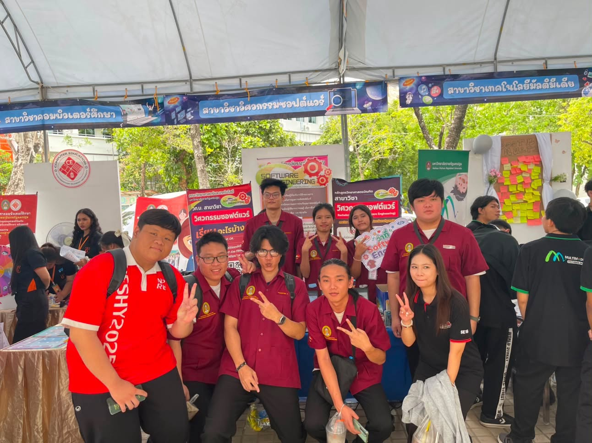
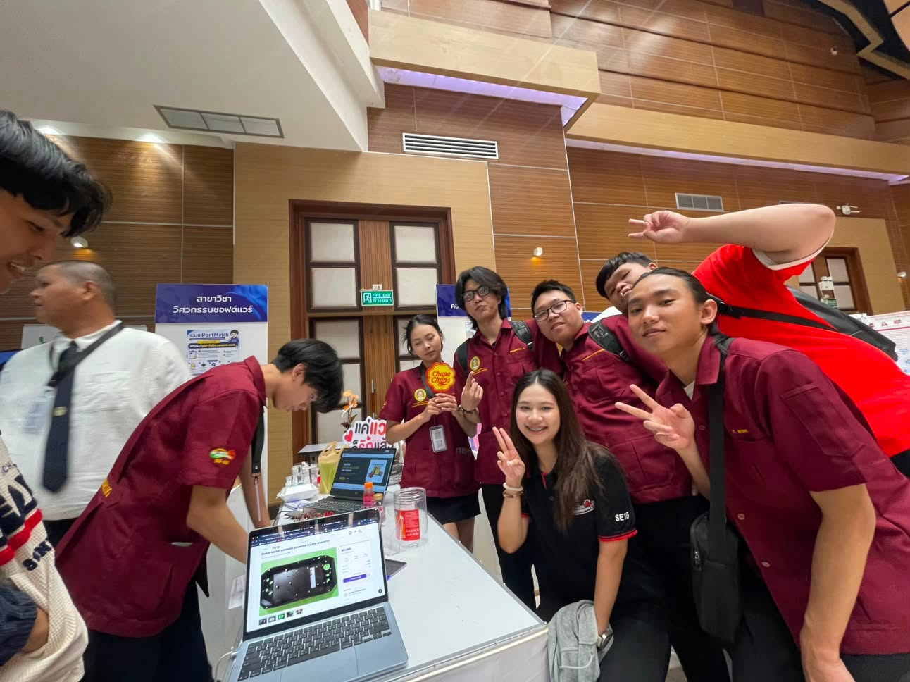
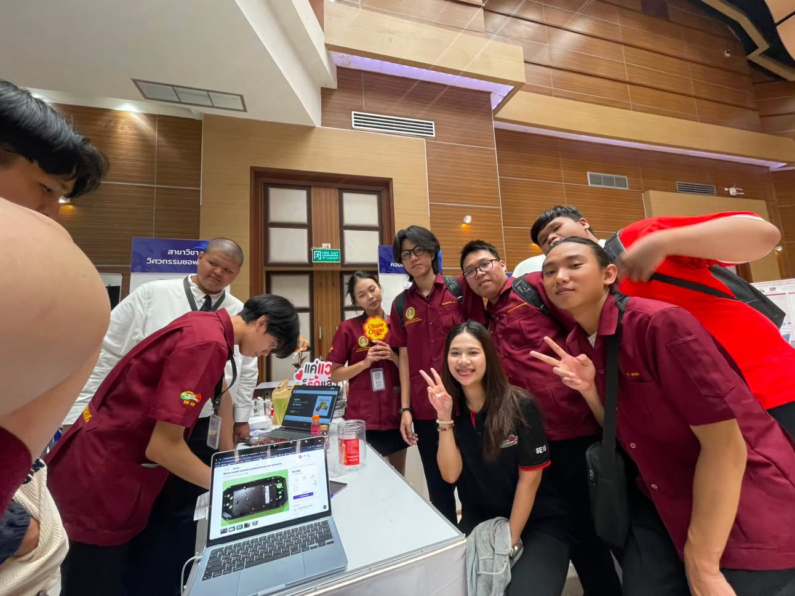
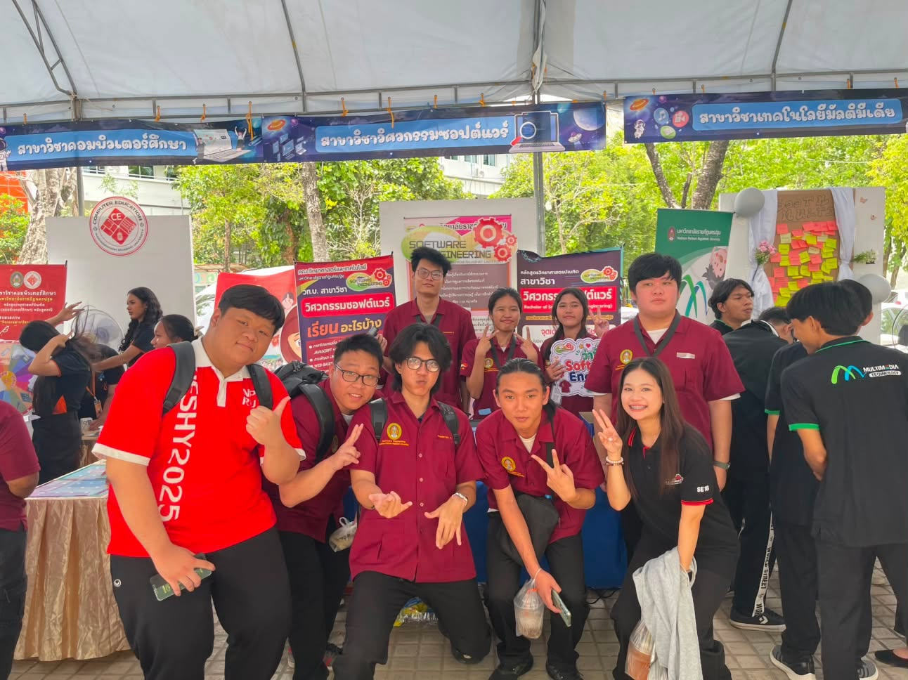
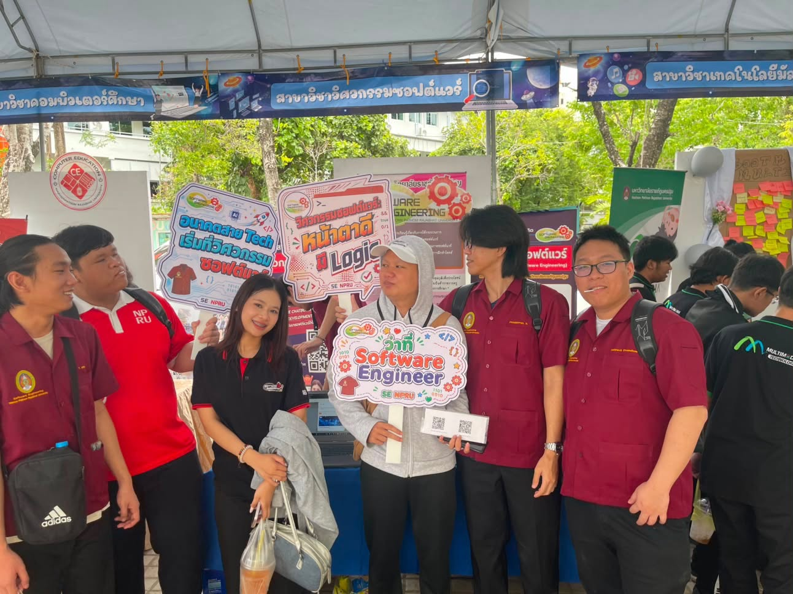
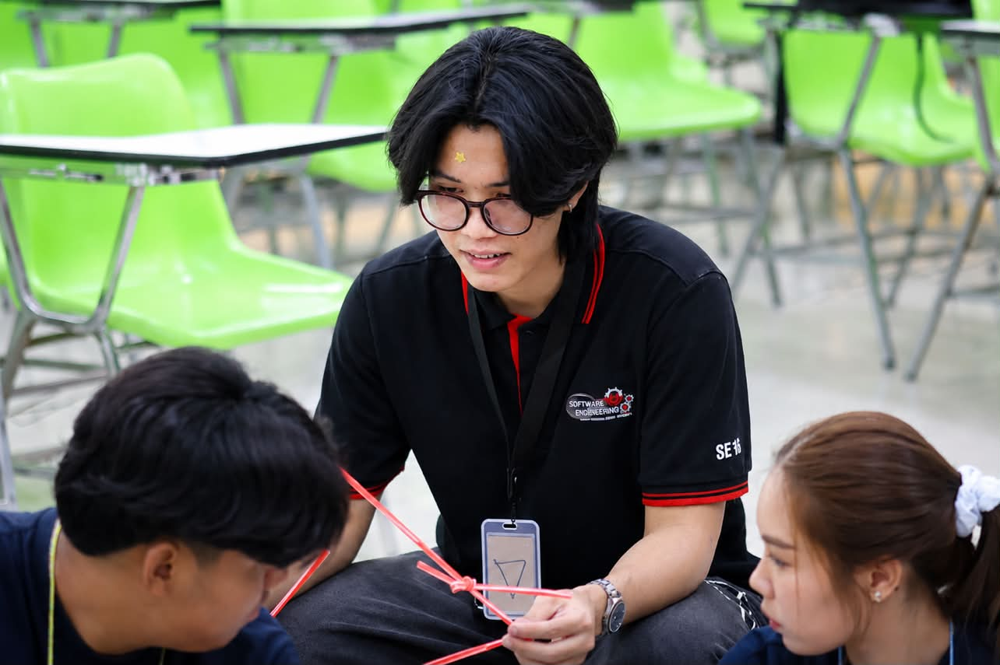
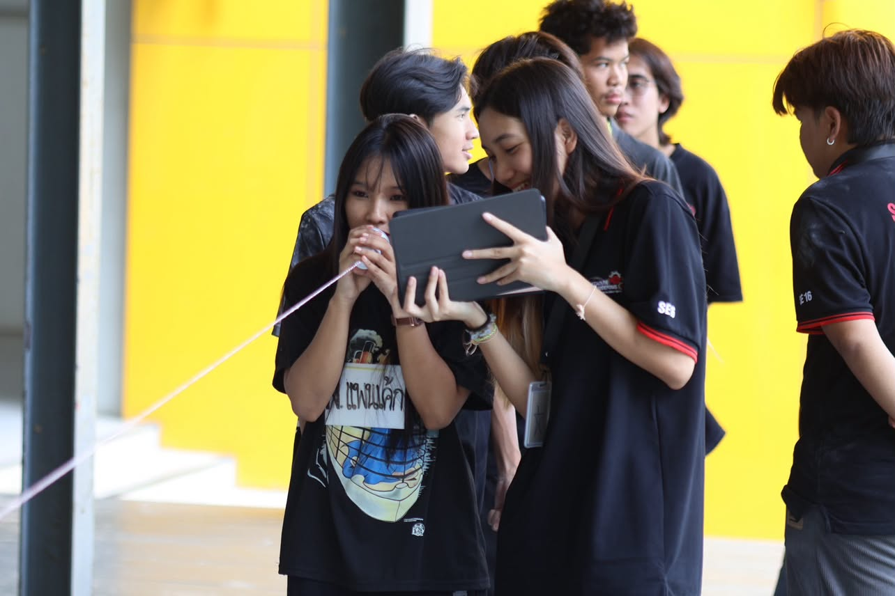
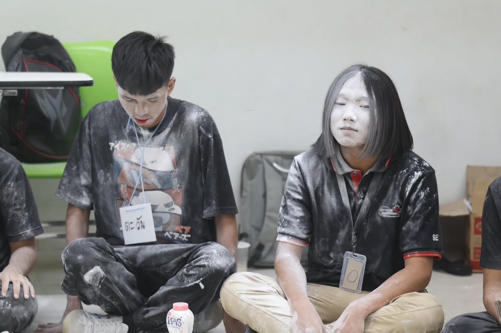
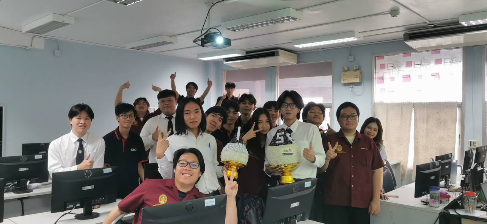
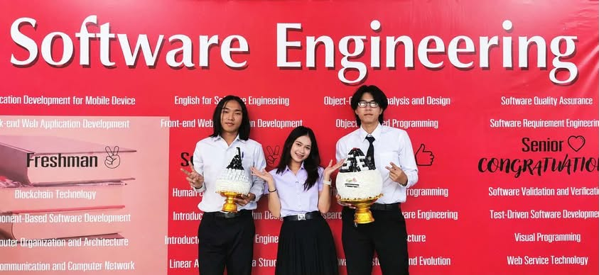

- ชื่อ-สกุล: นายประเสริฐศิลป์ สุนทรประสาทพร
- ชื่อเล่น: น๊อต
- รหัสนักศึกษา: 684259027
- วันเกิด: 26 ตุลาคม 2549
- สาขา: วิศวกรรมซอฟต์แวร์
ประวัติและทักษะ
ประวัติส่วนตัว
การศึกษา
ปริญญาตรี สาขาวิศวกรรมซอฟต์แวร์
คณะวิทยาศาสตร์และเทคโนโลยี มหาวิทยาลัยราชภัฏนครปฐม (กำลังศึกษา)
วิชาที่เกี่ยวข้อง: การออกแบบและพัฒนาเว็บเพจเบื้องต้น
เป้าหมาย
- ฝึกงานในตำแหน่ง Front-end Developer เพื่อเรียนรู้การทำงานจริง
- พัฒนาทักษะ JavaScript และเฟรมเวิร์กสมัยใหม่
- สร้างผลงานที่ใช้งานได้จริงและนำไปเผยแพร่บน GitHub
ทักษะ
ทักษะด้านเทคนิค
ทักษะการทำงาน
- ตั้งใจเรียนรู้และรับฟังคำแนะนำ
- ทำงานเป็นทีมและสื่อสารกับเพื่อนร่วมงาน
- รับผิดชอบงานและส่งตรงเวลา
ประสบการณ์และกิจกรรม
ประสบการณ์จากการเรียน
- ทำแบบฝึกหัดเว็บเพจรายสัปดาห์ (Heading, Formatting, Link และรูปภาพ)
- พัฒนาเว็บไซต์คู่มือสัตว์เลี้ยง และเว็บแนะนำตนเอง
- ใช้ Git/GitHub เก็บงานในรายวิชา
- เข้าร่วมกิจกรรมสัปดาห์วิทยาศาสตร์ เยี่ยมชมบูทโครงงานของพี่ปี 4 สาขาเดียวกัน
- เข้าร่วมกิจกรรมรับน้องนักศึกษาชั้นปีที่ 1
- ได้เป็นตัวแทนถือพานไหว้ครู
- เข้าร่วมกิจกรรมรับน้องนักศึกษาปี 1
- เป็นตัวแทนถือพานไหว้ครู
กิจกรรม
กิจกรรมที่ได้เข้าร่วมระหว่างศึกษาที่มหาวิทยาลัยราชภัฏนครปฐม
กิจกรรมที่ 1 เข้าร่วมบูทโครงงานของพี่ปี 4
เข้าร่วมกิจกรรมสัปดาห์วิทยาศาสตร์ เยี่ยมชมบูทโครงงานของพี่ ๆ ชั้นปี 4 สาขาวิศวกรรมซอฟต์แวร์ และสรุปแต่ละบูทว่าเป็นระบบอะไรและใช้เทคโนโลยีอะไรบ้าง

กลุ่มที่ 1 Mood Location
ระบบแนะนำสถานที่ให้เหมาะกับอารมณ์ของผู้ใช้
เทคโนโลยีที่ใช้:

กลุ่มที่ 2 Storemate
ระบบซื้อ-ขายสินค้าออนไลน์ พร้อมระบบจัดการสต็อกหลังบ้าน
เทคโนโลยีที่ใช้:

กลุ่มที่ 3 Fly up
แพลตฟอร์มระดมทุนเพื่อต่อยอดธุรกิจ
เทคโนโลยีที่ใช้:

กลุ่มที่ 4 T-CHECK
ระบบตรวจสอบเอกสารภาษาไทย
เทคโนโลยีที่ใช้:

กลุ่มที่ 5 SHAREED
แพลตฟอร์มแบ่งปันเอกสารสรุปเนื้อหาการเรียนแบบออนไลน์
เทคโนโลยีที่ใช้:
กิจกรรมที่ 2 กิจกรรมรับน้องนักศึกษาชั้นปีที่ 1
ภาพบรรยากาศการเข้าร่วมกิจกรรมรับน้องในปีที่ 1



กิจกรรมที่ 3 ตัวแทนถือพานไหว้ครู
ได้เป็นตัวแทนถือพานไหว้ครูในพิธีไหว้ครู


สิ่งที่ได้จากกิจกรรม
- ได้เห็นตัวอย่างโครงงานจริงที่ผู้พัฒนาเริ่มจากปัญหาแล้วออกแบบเป็นระบบ
- ได้รู้จักเทคโนโลยีที่ใช้กันจริง เช่น React, Express และ PostgreSQL
- ได้แนวคิดสำหรับโครงงานของตนเองในอนาคต